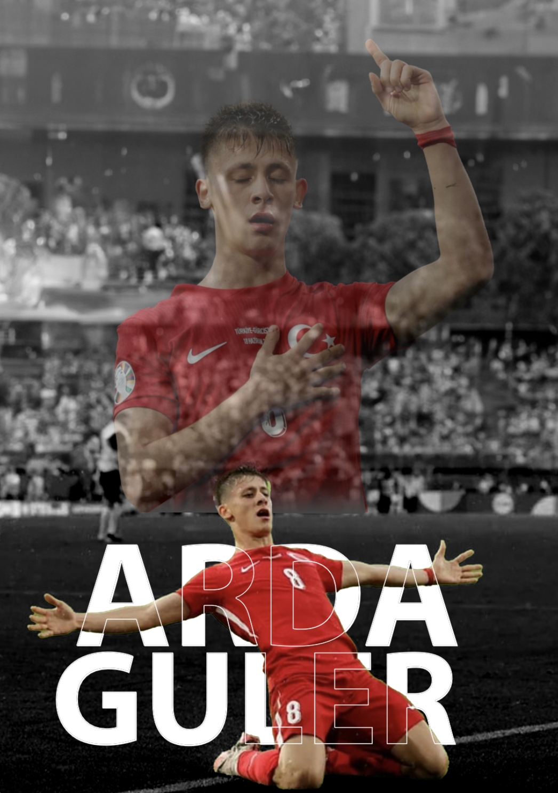
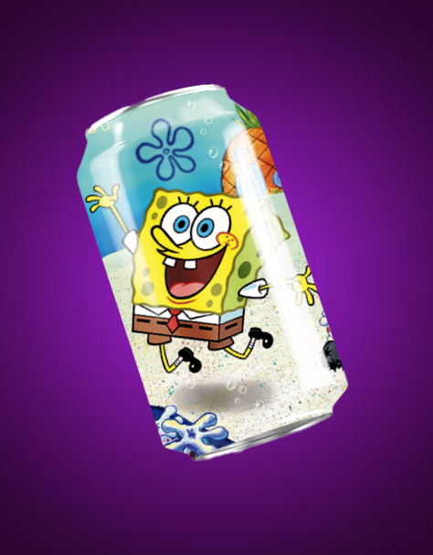
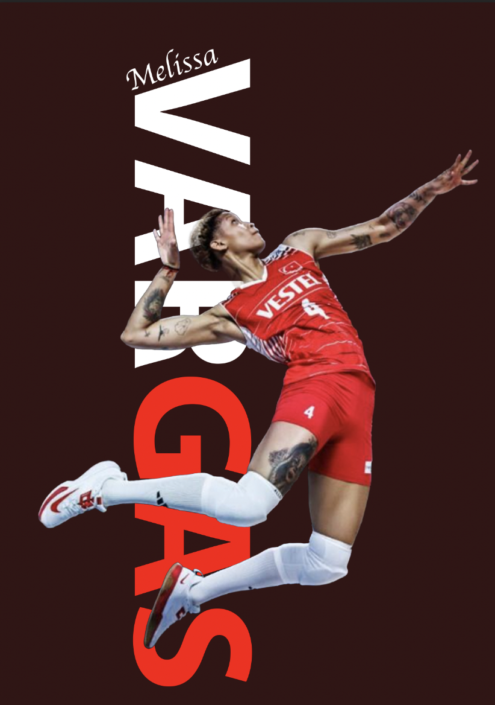
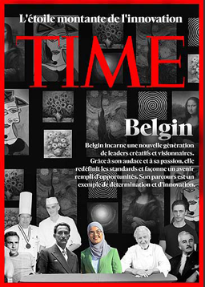

MES DERNIÈRES CRÉATIONS

Portrait d'Arda Güler, joueur de football en Turquie, mettant en avant sa passion et son dévouement pour le jeu.

Mockup de canette inspiré par le personnage de Bob l'Éponge, illustrant une boisson amusante et colorée.

Affiche de Melissa Vargas, célèbre joueuse de volleyball, montrant son énergie et sa puissance en action.
Double exposition mettant en scène un paysage de coucher de soleil à travers le profil d'une silhouette.

Cette couverture inspirée de TIME célèbre Belgin comme une figure de l'innovation et du leadership créatif. Réalisée dans un cadre scolaire.